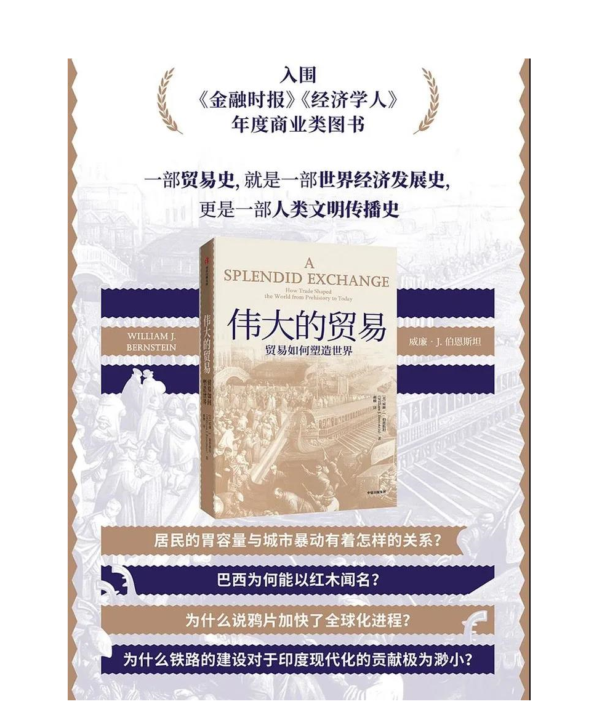

收录于合集
作者简介： 威廉·伯恩斯坦，哲学博士、医学博士，efficient frontier网站创始人、美国著名的金融经济历史传记和金融科普作家，以其对现代金融投资组合与公司财务报表的研究而享有盛名。同时，他还是《华尔街日报》《晨星》杂志专栏作家，著有《投资者宣言》、《繁荣的背后》、《伟大的交易》、《投资的四大支柱》等经典经济投资著作。

荐书简介
一百年前，只有昂贵如丝绸、金银、瓷器、香料才会穿行于各个大陆，如今法国矿泉水、比利时巧克力、新西兰水果则无处不在。几个世纪以来，骆驼和船只让人类智慧流动起来，从钟表、冰箱，到跨国公司，从阿拉伯数字、代数到复式记账法。现代生活在前所未有的贸易之河上流动。曾经由气候、季风主宰的旅途，艰辛、凶险、效率低下，如今各种货物绕地球以接近音速的高速飞行。
世界贸易不断持续和加强的趋势让我们的生活变得既繁荣又脆弱。我们对贸易的要求从根本上影响到人类的生存轨迹。本书是一部宏大的世界贸易史，时间跨度从公元前3000年的美索不达米亚到今天全球化的爆发，成功地探究了世界精彩纷呈又富于争议的过去，并对未来的观察提供了新的着眼点
目录
引言
第一章 苏美尔
第二章 贸易海峡
第三章 骆驼、熏香与先知
第四章 巴格达—广州航线
第五章 作茧自缚
第六章 贸易病
第七章 达·伽马的野望
第八章 纵横四海
第九章 公司肇启
第十章 移花接木
第十一章 成也自由，败也自由
第十二章 亨利·贝塞麦的创新
第十三章 分崩离析
第十四章 西雅图之战
内容节选
亚当· 斯密曾在其书中写道，人类有一种以物易物的内在偏好。
这种倾向纯粹是人类的本性，迄今为止，关于当今世界贸易起源的研究寥寥无几。比如，早在有历史记载的人类文明之初，在美索不达米亚与阿拉伯地区南部之间的广阔范围内，便已有繁忙的谷物与金属贸易。往前回溯，考古学家已经掌握有力证据，早在史前时代，便已有长途运输黑曜石、石器等战略物资的痕迹。尽管包括其他灵长目动物在内的物种时有彼此共同培育和分享食物的行为，但系统性的货物、服务交换——尤其是远距离层面上的——却从未被发现过。这一行为目前只存在于我们人类之中。那么，到底是什么驱动了早期的人类贸易呢？
进化人类学家将现代人类在非洲东部与南部的活动的起源上溯至10万年前。这些行为之一便是人类“以物易物”的内在倾向，这也使得人类社会生产出了前所未有的丰富而多样的物品。
尽管世界贸易往往与陆路和海路交通的科技创新相伴而生，但政治的稳定其实更为重要。譬如，公元前30年，屋大维挥师于希腊西部的亚克兴角，击败安东尼与埃及艳后克利奥帕特拉的势力，大面积地扩大了罗马帝国的版图，实现了帝国疆域内的和平与稳定。
在此之后，大量的胡椒、异域珍兽、象牙与名贵珠宝便通过贸易从东方涌入罗马。尽管当时整个意大利半岛都没有一个人真正见过中国人，就连制图师也未必了解中国准确的地理方位，但中国的丝绸还是在潮水般的新奇商品中脱颖而出，成为最为出名，也最令人渴求的商品。
让我们来考察一下贸易对于我们星球上农业进步的贡献。试想一下意大利美食中没有西红柿，印度大吉岭的高原上没有茶树，美国人的餐桌上没有小麦面包或牛肉，除了咖啡的原产地也门之外没有咖啡馆，或者德国的烹饪中没有土豆的场景。
在“哥伦布大交换”之前，以上假设都是真实存在的。当时，地球上各地居民都只能获取极为有限的农产品品种。然而，“哥伦布大交换”之后，也就是在哥伦布发现美洲大陆的1492年之后的数十年之间，通过物种的大交换，数十亿英亩的农田在曾经遥不可及的美洲大陆被开垦。这是怎么发生的？这为什么会发生？这又能告诉我们贸易的什么本质呢？
那些曾强盛一时的贸易组织，如英国与荷兰的东印度公司，率先在世界范围内建立了欧洲的商业霸权。随后的20世纪，垄断者则是大型跨国公司。如今，这些大型贸易组织已成为西方世界，尤其是美国文化与经济霸权的财富源泉。与此同时，它们也成为怨恨与敌对情绪的攻击目标。这些现代跨国巨头源自何方？当今由贸易引发的文化冲突、广泛蔓延的反美情绪，是一种新现象吗？
全世界对持续性的贸易流通与日俱增的依赖在为我们带来繁荣的同时，也使得我们变得更为脆弱。互联网的一次大规模停摆就可能导致国际经济的一次灾难。鉴于互联网的广泛使用的历史并不长，这一点尤其令人惊叹。
第一世界对于化石能源日益依赖，而这些能源大多进口自世界上最不稳定的几个国家，其中相当一部分国家必须穿过扼守着波斯湾入口的一道窄窄的海峡才能进入。贸易史可以为我们提供什么航标，以引领我们穿过这些危险的海域？
总而言之，我们到底是如何从古丝绸之路与基尼扎文献的世界发展到如今由现代贸易公司主导贸易的世界的呢？在古代世界，贸易是如此孤独、昂贵，甚至充满英雄主义，以至于只有回报率最高的奇珍异宝才会参与长途贸易。而如今，现代贸易公司让我们能自由享受智利的红酒、韩国的汽车与新西兰的苹果。
贸易促进国家稳定。在屋大维取得亚克兴角的胜利后，罗马帝国与东亚的商贸得以展开。这也为整个地中海与红海区域的贸易路线带来了长达近两个世纪的相对和平。尽管罗马在其鼎盛时期控制了整个贸易路线的1/3，但是它的影响力最远也只辐射到印度的恒河流域。
虽然很少有商人独自往来于印度与罗马之间的漫长贸易路线，但是印度的诸多邦国与罗马之间一直有频繁的外交使节互访。
两地的贸易中，经久耐用并镌刻着罗马皇帝头像的金币和银币被直接用于交易，购买印度本地的货物。这些当年被储备起来的货币至今仍不时在印度南部被发掘出来，让我们得以一窥2000年前的贸易模式。
这些钱币包括了从奥古斯都到提比略统治期间发行的不同时期的罗马货币，展示了两地之间大宗商品贸易的频繁与活力。在马可· 奥勒留去世的公元180年之后，罗马钱币基本就不再出现在印度的储备贸易货币中了。当罗马帝国与汉帝国在公元200年相继衰落后，东西方之间的贸易几乎完全停滞。
这一时期的另一大商业进展来自能熟练利用西印度洋夏季西南季风的希腊水手。最初，希腊人利用季风是为了借此在远离海岸的开阔海域航行，从而避免波斯帝国沿岸海盗的骚扰。
到了公元前110年左右，他们便开始尝试利用夏季季风带来的便利直接在蓝水中航行，通过红海的曼德海峡，向东穿过阿拉伯湾，抵达印度的最南端甚至更远。整个航程只需要6个星期甚至更短的时间。虽然“阿拉伯湾信风”早已在印度与阿拉伯的水手之间广为人知，但传说它最早是由一位名叫西帕路斯的航海家发现并命名的。希腊人自发地迎着可能带来滔天巨浪的可怕季风，直接穿过广阔的印度洋，而非沿着数千英里的无尽海岸缓缓航行，是当时远洋贸易得以扩展的主要原因。
托勒密王朝时期，埃及的希腊商人在冶金方面颇有建树，他们能用铁钉来固定船只。相比之下，早期阿拉伯与印度的船只只能用由椰子纤维编成的绳子来绑定船板，因此很容易在狂风巨浪中四分五裂。面临夏季西南季风的捶打，用铁钉来加固船身是至关重要的。直到19世纪，出现了飞剪船和蒸汽轮船，夏季的西南季风与冬季的东北季风的季节性交替仍主导着印度洋地区年度性贸易的节奏。
如果说人类挑战大自然的本能欲望在海上贸易中得到了丰厚的回报，那么人类在陆地上挑战自然的决定也得到了同样的回报，那就是将步履缓慢、体积庞大、毫无防范能力的骆驼一次又一次地从被遗忘的边缘拯救出来。骆驼在北美已经灭绝，在欧亚地区也已成为濒危动物。
人们对骆驼的利用最早可追溯到6000年前，最初只是因为它的奶水。直到公元前1500年人们才开始利用骆驼的负载能力。如果当初没能驯化骆驼，那么其后的跨越亚洲的丝绸贸易与跨越阿拉伯地区的香料贸易都是难以实现的。
鲜为人知的是，现代骆驼与马的祖先最初起源于北美大陆，而后才通过白令海峡大陆桥迁徙到亚洲大陆。然而这也仅限于驼群或马群，毕竟它们行动迅速，能够在短短几十年间，跨越千山万水，克服艰难险阻，从北美大陆的心脏地带迁徙到欧亚地区。同样的迁徙，对于北美温带地区更为脆弱的植物物种而言，则显得更为严峻。
1493年，克里斯托弗· 哥伦布的第二次远洋航行改变了这一切，颠覆了新大陆与旧大陆的农业与经济格局。哥伦布的17艘舰船就像来自伊比利亚半岛的挪亚方舟，为新大陆带来了1300名殖民者以及整个西方长年积累下来的农作物与驯化的家畜物种。
它们在新大陆的繁衍像草原上的野火一样迅速，即便是最微小的农作物物种的交换都产生了巨大的经济效益。这些农作物包括来自西半球的笋瓜、南瓜、木瓜、番石榴、牛油果、菠萝和可可，来自欧洲的葡萄、咖啡，以及一系列果树与坚果树。
这一切都显示，全球化并不是一个单一的事件或者一系列事件的集合，而是一个历经很长时间缓慢发展的过程。
世界并不是在互联网诞生的一夕之间就变“平坦”的，商贸也并不是20 世纪末突然在世界范围内被大企业主导的。从有文字可考的历史之初的奇珍异宝的贸易，到此后价格相对较低、体积较大、耐用性更低的商品的贸易，旧大陆各地的市场范围得以不断整合。
随着第一批欧洲人远洋航行到新大陆，全球市场一体化的过程得以加速。如今，体积庞大的集装箱货船、喷气式飞机、互联网以及日益全球化的供应与生产网络，只是早已进行了5000年的全球化进程中最新进展而已。
要想理解当今急剧变革的全球贸易模式的今生，最好的办法便是了解它的前世。现代生活就像一条不断上涨的贸易河流。我们如果想要了解它的水流与航向，就必须溯流而上到它的源头，到达诸如迪尔蒙、坎贝等商业中心城市。
只有在那里，我们才能追溯到世界贸易的源头，才能设想出世界贸易的前景。
编辑：康张城